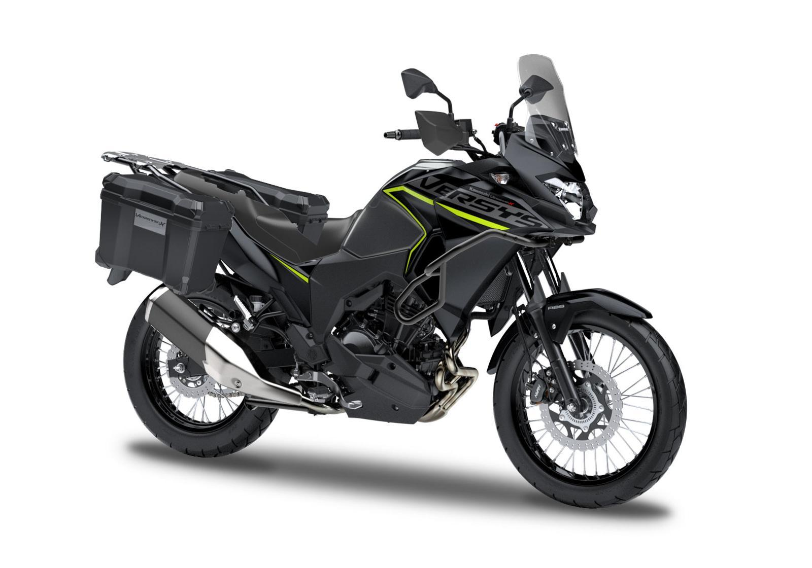

Kawasaki Versys-X 300 é boa para viagem?

Conhecendo a Kawasaki Versys-X 300
A Kawasaki Versys-X 300 é uma motocicleta da categoria adventure de baixa e média cilindrada que ficou conhecida por sua versatilidade. Muitos motociclistas se perguntam se a Kawasaki Versys-X 300 é boa para viagem, já que o modelo foi projetado para enfrentar tanto a cidade quanto estradas longas.
A moto utiliza um motor bicilíndrico derivado da Ninja 300, o que garante um funcionamento suave e boa entrega de potência em rotações mais altas. Isso faz com que a Versys 300 seja uma opção interessante para quem procura uma motocicleta confortável para percorrer longas distâncias.
Motor e desempenho na estrada
A Versys-X 300 possui um motor bicilíndrico de 296 cilindradas que entrega cerca de 40 cavalos de potência. Esse motor é conhecido por sua confiabilidade e por oferecer um funcionamento suave, algo importante para viagens longas.
Na estrada, a moto consegue manter velocidades de cruzeiro entre 100 km/h e 120 km/h com relativa tranquilidade. Embora não seja uma motocicleta extremamente potente, ela entrega desempenho suficiente para ultrapassagens seguras e viagens em rodovias.
Conforto para viagens longas
Um dos principais pontos positivos da Versys-X 300 é o conforto. A posição de pilotagem é mais ereta, o que reduz o cansaço em viagens longas.
Além disso, a moto possui um para-brisa frontal que ajuda a reduzir o impacto do vento no piloto. Isso melhora consideravelmente o conforto em viagens de várias horas.
A suspensão de longo curso também ajuda a absorver irregularidades da estrada, tornando a pilotagem mais suave em diferentes tipos de terreno.
Consumo e autonomia
Outro fator importante para quem faz viagens é o consumo de combustível. A Kawasaki Versys-X 300 costuma apresentar médias entre 25 km/l e 30 km/l , dependendo da forma de pilotagem.
Com um tanque de aproximadamente 17 litros, a autonomia pode ultrapassar facilmente 400 quilômetros em algumas situações. Isso significa menos paradas para abastecimento, algo muito valorizado por quem viaja de moto.
Vale a pena viajar com a Versys 300?
De forma geral, a resposta é sim: a Kawasaki Versys-X 300 é boa para viagem. Ela oferece uma combinação interessante de conforto, autonomia, confiabilidade mecânica e posição de pilotagem adequada para longos trajetos.
Embora existam motos maiores e mais potentes no segmento adventure, a Versys 300 continua sendo uma opção muito equilibrada para quem quer começar a fazer viagens de moto sem precisar investir em modelos de alta cilindrada.
Por isso, muitos motociclistas escolhem a Versys-X 300 como sua primeira moto voltada para turismo e estrada.